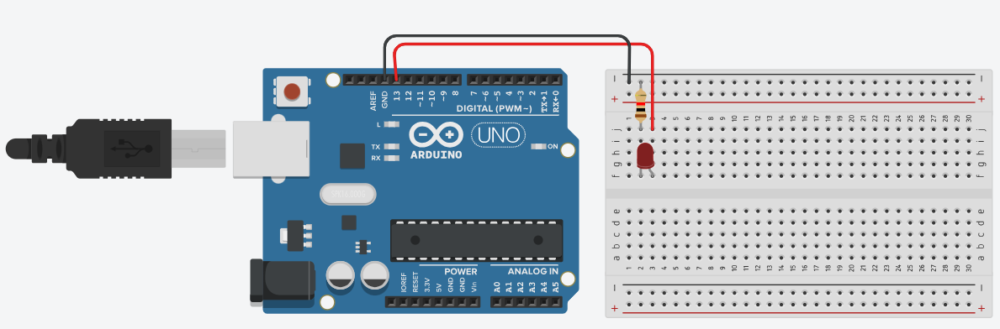
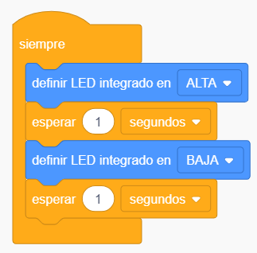

Práctica de informática
Objetivo:
Aprender a usar el correo electrónico y las algunas herramientas de la nube, y crear un circuito básico en Tinkercad.
Parte 1: Usar Gmail para enviar un correo
- Desde la página de Google, pulsar el enlace a Gmail. Escribir el correo institucional y la contraseña.
- Abrir una nueva pestaña, donde vamos a buscar en Google una imagen del personaje favorito. Hacer clic al botón derecho sobre la imagen y seleccionar Guardar imagen como. Seleccionar el Escritorio para guardar la imagen.
- Volver a la pestaña del correo, pulsar el botón Redactar. Luego:
- En el campo Para, escribir informatica.calasanz.2024@gmail.com.
- En el campo Asunto, escribir: Mi personaje favorito.
- En el cuerpo del mensaje, escribir cómo se llama el personaje y qué te gusta del mismo.
- Adjuntar la imagen usando el ícono del clip.
- Hacer clic en Enviar.
Parte 2: Usar Drive y Documentos
- Ingresar a Google Drive haciendo clic al ícono de nueve puntos en forma de cuadrado, ubicado en la esquina superior derecha y selecionar Drive.
- Pulsar el botón Nuevo >> Nueva carpeta
- Escribir el nombre de la carpeta con el apellido y nombre, luego pulsar Crear.
- Abrir una nueva pestaña y buscar en Google: ¿Qué es la nube de Internet?. Leer y seleccionar una definición sencilla, copiar el texto (teclas Ctrl+C).
- Volver a la carpeta creada en Drive y crear un Nuevo documento de Google en blanco. Pegar el texto copiado anteriormente (teclas Ctrl+V). Colocar el título o nombre al archivo: La nube.
- Compartir la carpeta, haciendo clic derecho sobre ella, seleccionar Compartir, escribir el correo: informatica.calasanz.2024@gmail.com y pulsar Enviar.
Parte 3: Usar Tinkercad y crear un circuito
- Abrir la página de Tinkercad.
- Pulsar el botón Crear una cuenta personal e indicar Iniciar sesión con Google, luego seleccionar tu cuenta de correo electrónico.
- Hacer clic en la pestaña
Circuitos y Seleccionar Crear nuevo circuito. - Diseñar el circuito de acuerdo al siguiente modelo: 
- En el botón Código Observar el programa predeterminado 
- Probar el circuito haciendo clic en Iniciar simulación
- Desafío: Intenta encender el LED usando el pin 10, modifica el tiempo de encendido y apagado.
Tarea:
Realizar un circuito en tinkercad de un semáforo peatonal. Crea un documento de Google en tu carpeta de Drive, explica el funcionamiento del semáforo y coloca una captura de pantalla del circuito.